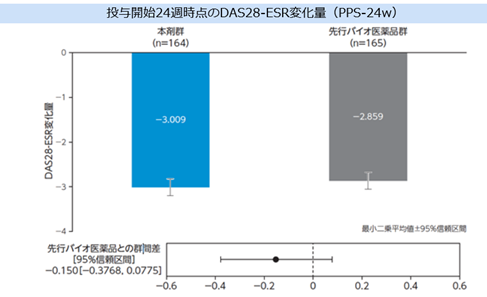
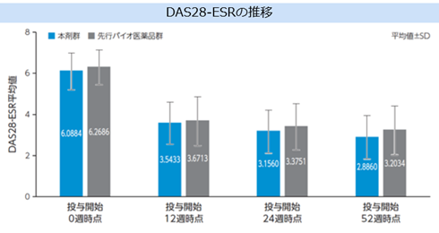

1.豊富な国内外のエビデンスと使用経験を有するエンブレルのBSである？
臨床成績（国際共同第 III 相試験/LG-ECCL002試験）
【目的】
MTXで効果不十分なRA患者を対象に、MTX併用下で先行バイオ医薬品に対する有効性及び安全性の同等性/同質性を検討する。
【試験デザイン】
ランダム化、多施設共同（日本：48施設、韓国：30施設）、二重盲検並行群間実薬対照比較試験
【対象】
MTX治療で効果不十分なRA患者374例（本剤群：187例 先行バイオ医薬品群：187例）
【投与方法】
本剤群：皮下注50mgシリンジ1.0mL「MA」を1回50mg、週1回皮下投与
先行バイオ医薬品群：皮下注50mgシリンジ1.0mLを1回50mg、週1回皮下投与
【主要評価項目】
投与開始24週時点のDAS28-ESR（赤血球沈降速度）のベースラインからの変化量


あゆみのエタネルセプトBSは、先発品と有意差がないことが確認されている
治験により確認されたのは先発品との同質・同等性であり、あくまで同一物質ではない。
市販後の安全性等について製版後調査にて明らかにしていく必要がある。

ETN-BSは特定使用成績調査（RA）使用成績調査（pJIA）を実施予定